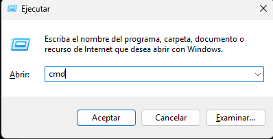
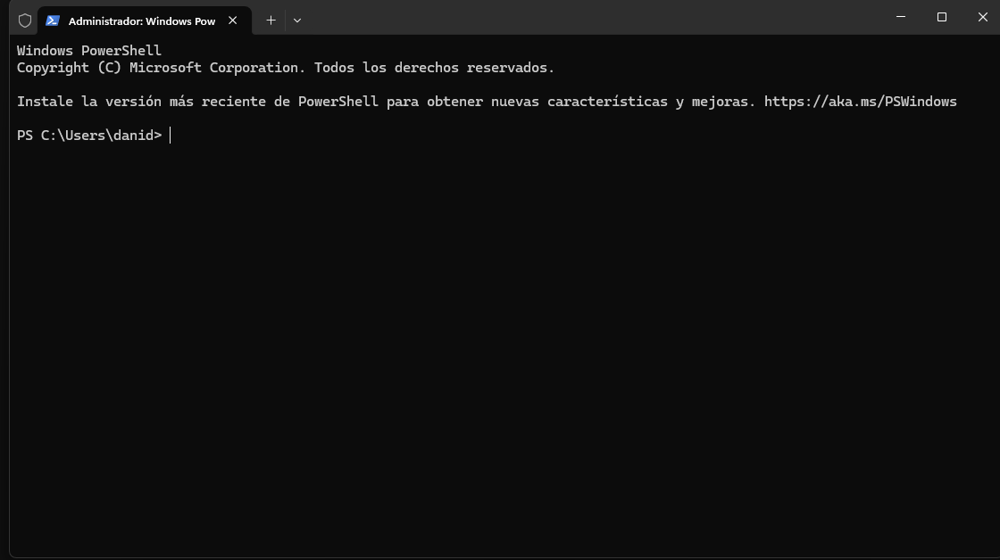

Manual de Comandos del Sistema
En esta sección se presentan comandos utilizados en CMD y PowerShell para analizar el estado del sistema operativo, diagnosticar problemas y obtener información del hardware.
¿Cómo abrir el Símbolo del Sistema (CMD)?
- Presiona Windows + R.
- Escribe
cmd. - Presiona Enter.
También puedes buscar "Símbolo del sistema" en el menú inicio. Para comandos avanzados, ejecuta como administrador.

¿Cómo abrir PowerShell?

- Haz clic derecho en el botón Inicio.
- Selecciona Windows PowerShell o Terminal de Windows.
- Opcional: Ejecutar como administrador.
PowerShell es una herramienta más avanzada que CMD y permite automatización y administración profunda del sistema.
Recomendaciones antes de ejecutar comandos
- Ejecutar como administrador cuando el comando lo requiera.
- No cerrar la ventana mientras un análisis esté en proceso.
- Leer cuidadosamente los mensajes del sistema.
- Algunos comandos pueden requerir reiniciar el equipo.
Comandos del Sistema
A continuación se presentan los comandos organizados por categorías según el componente del sistema que analizan.
CMD (Símbolo del Sistema)
Procesador y Sistema
systeminfo
Muestra información detallada del sistema (CPU, memoria y parches).
perfmon /report
Genera un informe completo de rendimiento del sistema.
Disco Duro
chkdsk C: /f /r
Revisa y repara errores en el disco duro.
/fCorrige errores automáticamente./rLocaliza sectores defectuosos.
fsutil dirty query C:
Comprueba si el volumen necesita reparación.
Memoria RAM
mdsched.exe
Abre el diagnóstico de memoria de Windows.
systeminfo
Muestra memoria instalada y disponible.
Archivos del Sistema
sfc /scannow
Escanea y repara archivos dañados.
DISM /Online /Cleanup-Image /RestoreHealth
Repara la imagen del sistema.
PowerShell
Procesador y Sistema
Get-ComputerInfo
Muestra información completa del sistema.
Get-Process | Sort-Object CPU -Descending
Lista procesos que más CPU consumen.
Disco Duro
Get-PhysicalDisk
Estado de discos físicos.
Repair-Volume -DriveLetter C -Scan
Escanea errores del disco.
Memoria RAM
Get-WmiObject Win32_PhysicalMemory
Información técnica de la RAM.
Get-Counter '\Memory\Available MBytes'
Memoria disponible en tiempo real.
Actualizaciones
Get-WindowsUpdateLog
Historial de actualizaciones.
Install-Module PSWindowsUpdate
Gestiona actualizaciones desde PowerShell.